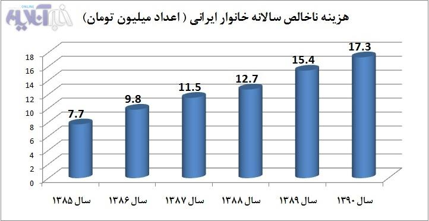

پذيرش > سایت نوشته ها > اگر هر خانواده ۵-۶ بچه داشته باشد چقدر باید درآمد داشته باشد تا زیر خطر فقر (...)


 اگر هر خانواده ۵-۶ بچه داشته باشد چقدر باید درآمد داشته باشد تا زیر خطر فقر نرود؟ اگر هر خانواده ۵-۶ بچه داشته باشد چقدر باید درآمد داشته باشد تا زیر خطر فقر نرود؟
13 اردیبهشت 1392 - - نسخه قابل چاپ
راساس طرح وزارت بهداشت هر خانواده ایرانی باید 5 تا 6 فرزند داشته باشند، اما اقتصادانان می گویند این خانواده ها باید بیش از دو میلیون تومان درآمد داشته باشند.
محمد حسین نجاتی: چند سالی است که اقتصاد خانوار های ایرانی اگر بدتر وضعیت اقتصادی صنایع، فعالان بخش دولتی و خصوصی و به طور کلی کسب و کار در کشور نباشد، بهتر نیست. بررسی وضعیت هزینه های ناخالص خانواده های ایرانی از سال 1385 تا سال 1390 طبق آمار رسمی بانک مرکزی نشان می دهد، که هزینه هر خانوار ایرانی (که معمولا ملاک جمعیتی 4 نفری در نظر گرفته می شود) در سال 1385 از 7 میلیون و 700 هزار تومان به 17 میلیون و 300 هزار تومان رسیده است. (شرح کامل در نمودار شماره یک)
حالا با این تفاصیل وزارت بهداشت از طرح جدید جمعیتی خود پرده برداشته است که با توجه به وضعیت کنونی هزینه، درآمد و اقتصاد خانواده ها سوال های زیادی را به وجود می آورد. در هفته ای که گذشت رییس جدید مرکز سلامت خانواده و جمعیت وزارت بهداشت در اولین روز آغاز به کارش سیاستهای جمعیتی جدید این وزارتخانه را تشریح کرد، بر این اساس قرار است رشد جمعیت کشور از نرخ 1.8 کنونی به دو برابر و به حدود 3.6 تا 3.8 درصد برسد که بهطور متوسط هر خانواده ایرانی باید پنج یا شش فرزند داشته باشد.
گرچه رئیس جدید مرکز سلامت خانواده و جمعیت وزارت بهداشت اشاره ای به چگونگی توانمند کردن خانواده ها از نظر اقتصادی برای فرزندآوری نکرده است اما در این گزارش با اشاره کوتاهی به هزینه های خانواده ها ی ایرانی این سوال را مطرح می کنیم که با توجه به افزایش 124 درصدی هزینه خانوار های ایرانی طی 6 سال اخیر، چطور خانواده های ایرانی به طرح فرزندآوری آن هم تا 5-6 فرزند تن می دهند؟
نمودار شماره یک- در نمودار زیر روند افزایش هزینه های ناخالص خانوار های ایرانی طی 6 سال اخیر را ببینید؛

خانواده ها با 5 تا 6 فرزند با چه میزان درآمدری زیر خط فقر نمی روند؟
صحبت فرزندآوری از سوی مسئولان وزارت بهداشت، آن هم نه یک بچه، نه دو بچه بلکه 5-6 تا شاید به راحتی مطرح شود اما اقتصاددانان نظر دیگری در این زمینه دارند.
گرچه مسئولان وزارت بهداشت به مسایل اقتصادی این طرح اشاره ای نکرده اند اما حسین راغفر اقتصاددان در پاسخ به این سوال که با وضعیت اقتصادی امروز حداقل نیاز ماهانه یک خانواده با پنج فرزند در شهر تهران برای داشتن وضعیت متوسط چه مبلغی است، میگوید: «برای سطح زندگی حداقلی شامل هزینههای مسکن، خوراک، حملونقل و دیگر ضروریات اولیه خط فقر برای یک خانواده با پنج فرزند در شهر تهران دومیلیون و 200هزار تومان است، البته این مبلغ برای گذران یک زندگی خوب نیست، برای زندگی روی مرز خط فقر است.»
نمودار شماره دو
در نمودار زیر نسبت هزینه های خالص یک خانواده شهری را ببینید؛
افزایش هزینه های خانوار های ایرانی و افزایش جمعیت
اجزای هزینه ناخالص در نظر گرفته شده برای خانوار ایرانی در سال 90 (آخرین آمار موجود برای هزینه های خانوار)، از 12 گروه «خوراکیها و آشامیدنیها»، «دخانیات»، «پوشاک و کفش»، «مسکن، آب، برق، گاز و سایر سوختها»، «لوازم، اثاث و خدمات مورد استفاده در خانه»، «بهداشت و درمان»، «حمل و نقل»، «ارتباطات»، «تفریح و امور فرهنگی»، «تحصیل»، «رستوران و هتل» و «کالاها و خدمات متفرقه» تشکیل شده است. بنابراین ملاحظه میشود اجزای «هزینه ناخالص خانوار» که در این آمار منظور شده، به نوعی بازتابنده «سبد مصرفی خانوار» است که آن نیز هزینه زندگی مصرفکننده را منعکس میکند. ( شرح کامل در نمودار شماره یک) حالا وقتی هزینه های خانواد های ایرانی هر روز در حال افزایش است، کدام خانواده ی ایرانی با توجه به طرح وزارت بهداشت مبنی بر اینکه هر خانواده باید 5-6 فرزند داشته باشد، تن خواهد داد؟
خبرآنلاین
ارسال به
بالاترین
،
توییتر
،
فریندفید
،
فیسبوک
در همين بخش :
 یک خبر تلخ؟ یک قانونشکنی؟ یک تصمیم بخشنامهای جدید؟ یک خبر تلخ؟ یک قانونشکنی؟ یک تصمیم بخشنامهای جدید؟
چرا بایست به سکسوالیته پرداخت؟ / نفیسه آزاد
آزارجنسی خانگی؛ «قربانی» نه، «نجات یافته»
زنان، بزرگترین بازندگان بهار عرب
سانسور از دیدگاه جنسیتی/الهه امانی
ديگر بخش ها :
طرح یک میلیون امضا
|
مقالات
|
سایت نوشته ها
|
اخبار
|
گزارش كمپين
|
گفت و گو
|
علیه سکوت
|
كوچه به كوچه
|
نامه های شما
|
گزارش ویژه
|
گفتگو با اعضا
|
ویژه سالگرد کمپین
|
تصویر برابری
|
دل آرام علی
|
تریبون
|
مقالات
|
تاریخ شفاهی
|
خارج از چارچوب
|
کتابخانه
|
درباره کمپین
|
کمپین در شهرها
|
کمپین در بند
|
صدای تغییر
|
ویژه 22 خرداد
|
لایحه حمایت از خانواده
|
گالری
|
عشا مومنی
|
امیر یعقوبعلی
|
خدیجه مقدم
|
راحله عسگری زاده و نسیم خسروی
|
پروین اردلان،جلوه جواهری، مریم حسین خواه، ناهید کشاورز
|
زینب پیغمبرزاده
|
سعیده امین، سارا ایمانیان، محبوبه حسین زاده، ناهید کشاورز و همایون نامی
|
احترام شادفر
|
نسیم سرابندی زاده،فاطمه دهدشتی
|
وبلاگ مهمان
|
پرونده خرم آباد
|
دستگیری ها
|
مریم مالک
|
پرستو اللهیاری
|
مهرنوش اعتمادی
|
سمیه رشیدی
|
Other Languages
|
همراهان
|
«فراخوان کمپین ده روز با بهاره هدایت»
| English
|